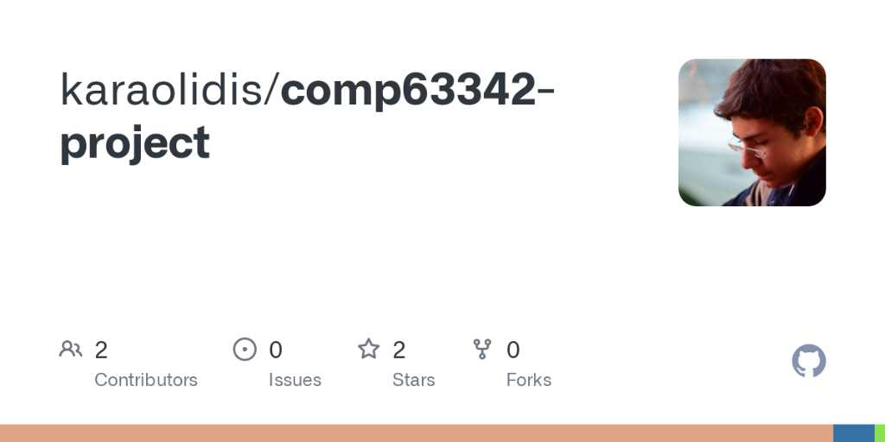
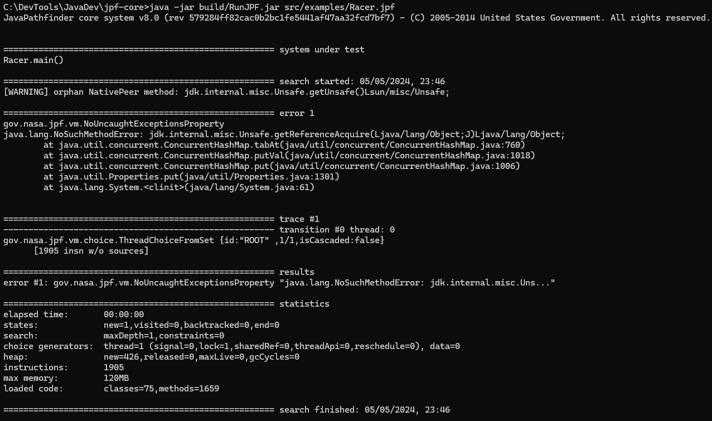

Understanding Programming Bugs in Java Using Counterexamples
# #
# #
#######
## ## .-=-=-=-=-=-=-=-=-=-=-=-=-=-=-=-=-=-=-=-=-=-=-=-=-=-=-=-=-=-=-=-=-=-=-=-=-=-=-=-=-=-=-=-=-=-.
## ## | _________ __ _________ __ .__ __ |
####### ! \_ ___ \ ____ __ __ _____/ |_ ___________/ _____// |________|__| | __ ____ !
########### : / \ \/ / _ \| | \/ \ __\/ __ \_ __ \_____ \\ __\_ __ \ | |/ // __ \ :
### ##### ### : \ \___( <_> ) | / | \ | \ ___/| | \/ \| | | | \/ | <\ ___/ :
## # # # ## ! \______ /\____/|____/|___| /__| \___ >__| /_______ /|__| |__| |__|__|_ \\___ > !
# # ########### # # | \/ \/ \/ \/ \/ \/ |
###### ###### .-=-=-=-=-=-=-=-=-=-=-=-=-=-=-=-=-=-=-=-=-=-=-=-=-=-=-=-=-=-=-=-=-=-=-=-=-=-=-=-=-=-=-=-=-=-.
### ###
#######
Introduction
JBMC is a Bounded Model Checker used to find vulnerabilities in Java programs.
It combines BMC with SMT and symbolic execution to perform bit accurate verification on Java code. [1]
Introduction
Counterexamples are execution traces of the system produced by BMCs that illustrate how an error state can be reached from the initial state. [2]
They provide the user with information which can be used to debug their systems.
The Problem
The counterexamples produced by JBMC, especially for complex programs, are too long to parse, and the structure is difficult to understand.
The Solution
We developed a tool that:
- Collects and manipulates JBMC traces
- Generates Java code using the traces to reproduce identified vulnerabilities
The Solution
Furthermore, we:
- Evaluated the tool's effectiveness with benchmarks from the Software Verification Competition (SV-COMP)
- Compared our tool with other Java verifiers (JPF)
The Solution
Implementation
Why Rust?

Look at this adorable creature.
Modelling JBMC Output
🤔
Modelling JBMC Output
🤮
Modelling JBMC Output
😍 serde_json 😍
Modelling JBMC Output
😍 serde_json 😍
Modelling JBMC Output
😍 serde_json 😍
Execution Flow
main.rs
Execution Flow
codegen.rs
API
Results
Results
JPF Output
🙄
Setbacks
- Variables must be declared as parameters to the tested method
Setbacks
- Variables must be declared as parameters to the tested method
❌
Setbacks
- Variables must be declared as parameters to the tested method
✅
Setbacks
- Variables must be declared as parameters to the tested method
- No support for non-NULL pointers
Setbacks
- Variables must be declared as parameters to the tested method
- No support for non-NULL pointers
❌
Setbacks
- Variables must be declared as parameters to the tested method
- No support for non-NULL pointers
- Compilation dependency errors
Related Work
- Counterexample-Guided Refinement
- Symbolic Execution Engines
- Static Analysis Tools for Java
Open Challenges
- Completeness
- Witness Validation
Thank You
💕
References
- Cordeiro, L., Kesseli, P., Kroening, D., Schrammel, P. and Trtik, M., "JBMC: A bounded model checking tool for verifying Java bytecode"
- Taghdiri, M., and Jackson, D., "Inferring specifications to detect errors in code"
- Kádár, I., "The optimization of a symbolic execution engine for detecting runtime errors"
- Kahsai, T., Rümmer, P., Sanchez, H. and Schäf, M., "JayHorn: A framework for verifying Java programs"
- Wu, T., Schrammel, P., and Cordeiro, L., "Wit4Java: A violation-witness validator for Java verifiers"